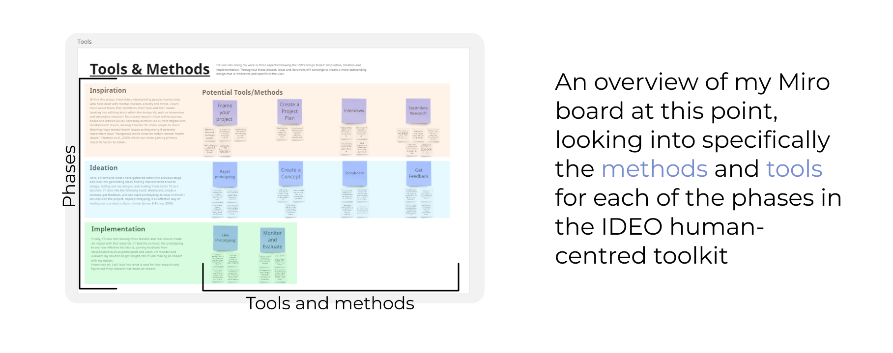

Blog 2 | Design Methodology and Planning
Design 302 | Date: 04/08/24 (Sunday)
The Four Fs
Within this blog post, I’ll be reflecting on mostly week 3 based on the toolkits, using The Four Fs.
Facts
During week 3, I started on the inspiration phase, looking into researching more on my topic. I continued to plan more on the design process for my project. Examining the different phases of my design process and confirming the methods and tools I would use.
Figure 1.
Overview of methods within my Miro board

Note: Image with a screenshot of author's Miro board depicting an overview of the tools and methods to be used within each phase of the design methodology chosen.
Feelings
Throughout this week and previous weeks, I have felt unsure and somewhat insecure about what I am doing. Not confident or certain in how my project was going to turn out.
As I had gone through the IDEO toolkit and selected each method of my design process, I started to feel more confident in the inspiration and ideation phases of this project, yet uncertain if this design methodology was the right choice when I had started looking into the implementation phases. They seemed to be more business-oriented than I had thought previously, which made me feel somewhat frustrated and confused about why I had previously chosen this toolkit.
Findings
I had found from doing this that despite this design toolkit being not exactly what I had previously thought, going through its phases and methods had definitely helped with my previous feelings of confusion and fuustrations on the future/process of this research. Although I had negative initial reactions to the implementation phases of this toolkit, I’ll keep using it. I also learnt that these business-oriented methods are vital in the IDEO toolkit for its three lenses - which cover design innovation as being desirable, feasible and viable.
Future
From this, I have taken away that my chosen design method wasn't a perfect fit. However, I will continue using it, with the potential to change some aspects of the implementation methods to better fit my research, being less business-oriented.
I can also take away from this the importance of planning ahead, had I not gone through my design methodology beforehand, I might've felt this frustration later in the design process and not have the time to think through what I would do. Having gone through this early on, I was able to change my plans according and if I had deemed this design methodology fully unfit, I would been able to change it before I had started on my project, saving away wasted efforts and emotions.
References
Greenaway, R. (n.d.).The Active Reviewing Cycle.
https://reviewing.co.uk/learning-cycle/
Ideo, & Ideo.Org. (2015). Field Guide to Human-Centered Design
The four F’s of active reviewing. (2018, November 5). The University of Edinburgh.
https://www.ed.ac.uk/reflection/reflectors-toolkit/reflecting-on-experience/four-f